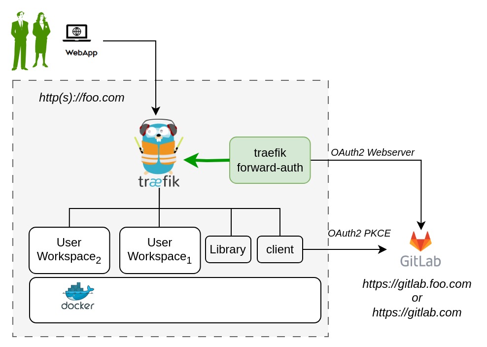

Install DTaaS on a Production Server
The installation instructions provided in this README are ideal for hosting the DTaaS as web application for multiple users.
Design
An illustration of the docker containers used and the authorization setup is shown here.

In the new application configuration, there are two OAuth2 applications.
Requirements
The installation requirements to run this docker version of the DTaaS are:
Docker with Compose Plugin
It is mandatory to have Docker installed on your computer. We highly recommend using Docker Desktop.
Domain name
The DTaaS software is a web application and is preferably hosted
on a server with a domain name like
TLS / HTTPS Certificate (Optional)
It is possible to add HTTPS option to the DTaaS software installation. Creation of the required TLS certificates is possible through certbot.
OAuth Provider
Gitlab Instance - The DTaaS uses Gitlab OAuth2.0 authorization for user authorization. You can either have an on-premise instance of gitlab, or use gitlab.com itself.
User Accounts
Create user accounts in a linked gitlab instance for all the users.
The default docker compose file contains two - user1 and user2. These names need to be changed to suitable usernames.
OAuth2 Application Registration
The multi-user installation setup requires dedicated authorization setup for both frontend website and backend services. Both these authorization requirements are satisfied using OAuth2 protocol.
- The frontend website is a React single page application (SPA).
- The details of Oauth2 app for the frontend website are in client docs.
- The Oauth2 authorization for backend services is managed by Traefik forward-auth. The details of this authorization setup are in server docs.
It is possible to use https://gitlab.com or a local installation of Gitlab can be used for this purpose. Based on your selection of gitlab instance, it is necessary to register these two OAuth2 applications and link them to your intended DTaaS installation.
Please see gitlab oauth provider documentation for further help with creating these two OAuth applications.
Download Release Package
The software is available for as zip package. Please download and unzip the same. A new DTaaS-v0.6.0 folder gets created. The rest of the installation instructions assume that you are using Windows/Linux/MacOS terminal in DTaaS-v0.6.0 folder.
Tip
- The filepaths shown here follow Linux OS. The installation procedures also work with Windows OS.
- The description below refers to filenames. All the file paths mentioned below are relatively to the top-level DTaaS directory.
Configuration
Three following configuration files need to be updated.
Docker Compose
The docker compose configuration is in deploy/docker/.env.server.
it is a sample file.
It contains environment variables
that are used by the docker compose files.
It can be updated to suit your local installation scenario.
It contains the following environment variables.
Edit all the fields according to your specific case.
| URL Path | Example Value | Explanation |
|---|---|---|
| DTAAS_DIR | '/Users/username/DTaaS' | Full path to the DTaaS directory. This is an absolute path with no trailing slash. |
| SERVER_DNS | The server DNS, if you are deploying with a dedicated server. Remember not use |
|
| OAUTH_URL | The URL of your Gitlab instance. It can be |
|
| OAUTH_CLIENT_ID | 'xx' | The ID of your server OAuth application |
| OAUTH_CLIENT_SECRET | 'xx' | The Secret of your server OAuth application |
| OAUTH_SECRET | 'random-secret-string' | Any private random string. This is a password you choose for local installation. |
| username1 | 'user1' | The gitlab instance username of a user of DTaaS |
| username2 | 'user2' | The gitlab instance username of a user of DTaaS |
Tip
Important points to note:
- The path examples given here are for Linux OS. These paths can be Windows OS compatible paths as well.
- The client configuration file is located at
deploy/config/client/env.js. - The Server DNS can also be an IP address. However, for proper working it is neccessary to use the same convention (IP/DNS) in the client configuration file as well.
Website Client
The frontend React website requires configuration which is specified
in the client configuration file (deploy/config/client/env.js).
Further explanation on the client configuration is available in client config.
Tip
There is a default OAuth application registered on https://gitlab.com for client. The corresponding OAuth application details are:
This can be used for test purposes. Please use your own OAuth application for secure production deployments.
Create User Workspace
The existing filesystem for installation is setup for files/user1.
A new filesystem directory needs to be created for the selected user.
Please execute the following commands from the top-level directory of the DTaaS project.
where username is one of the selected usernames. This command needs to be repeated for all the selected users.
Configure Authorization Rules for Backend Authorization
The Traefik forward-auth microservices requires configuration rules to manage
authorization for different URL paths.
The deploy/docker/conf.server file can be used to
configure the authorization for user workspaces.
Please change the usernames and email addresses to the matching user accounts on the OAuth provider (either https://gitlab.foo.com or https://gitlab.com).
Caveat
The usernames in the deploy/docker/.env.server file need to match those in
the deploy/docker/conf.server file.
Traefik routes are controlled by the deploy/docker/.env.server file.
Authorization on these routes is controlled by the deploy/docker/conf.server file.
If a route is not specified in deploy/docker/conf.server file
but an authorisation is requested by traefik for this unknown route,
the default behavior of
traefik forward-auth kicks in. This default behavior is to enable
endpoint being available to any signed in user.
If there are extra routes in deploy/docker/conf.server file but these are not
in deploy/docker/.env.server file,
such routes are not served by traefik; it will give 404 server response.
Access Rights Over Files
Warning
The default setting in docker compose file exposes
all user files at http://foo.com/lib/files.
All files of all the users are readable-writable by
all logged in users.
The compose.server.yml / compose.server.secure.yml file needs to be
updated to expose another directory like common assets directory.
If you wish to reduce this scope to only common assets, please change,
The change in the last line. The ${DTAAS_DIR}/files
got replaced by ${DTAAS_DIR}/files/common. With this change, only
common files are readable-writable by all logged in users.
Add TLS Certificates (Optional)
The application can be served on HTTPS connection for which TLS certificates
are needed. The certificates need to be issued for foo.com or *.foo.com.
The names of the certificates must be fullchain.pem and privkey.pem. Copy
these two certificate files into:
certs/foo.com/fullchain.pemcerts/foo.com/privkey.pem
Traefik will run with self-issued certificates if the above two certificates are either not found or found invalid.
Remember to update dynamic/tls.yml with correct path matching your DNS name.
For example, if your DNS name is www.foo.com, then copy the
TLS certificates of www.foo.com to certs/ directory and update
dynamic/tls.yml as follows.
Run
Over HTTP
This docker compose file serves application over HTTP.
The commands to start and stop the appliation are:
To restart only a specific container, for example `client``
Over HTTPS
This docker compose file serves application over HTTP.
The commands to start and stop the appliation are:
To restart only a specific container, for example `client``
Use
The application will be accessible at:
All the functionality of DTaaS should be available to your users through the single page client now.
You may have to click Sign in to Gitlab on the Client page and authorize access to the shown application.
Adding a new user
Please see the add new user to add new users.
References
Image sources: Traefik logo, ml-workspace, reactjs, gitlab